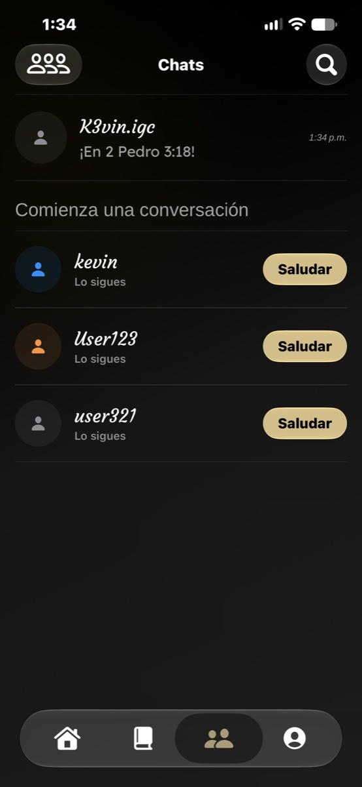
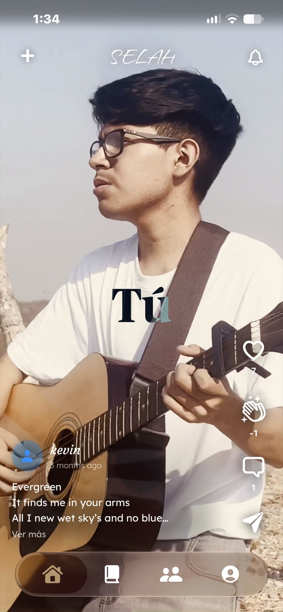

Un momento para la Palabra.
Devocionales y planes de lectura para acompañarte mientras creces en tu relación con Dios.
En desarrolloTu fe también tiene un lugar aquí. Una red social cristiana para compartir testimonios, oraciones y los talentos que Dios te ha dado, conectar de verdad y crecer juntos en Cristo.


Hay algo especial en caminar con personas que comparten tu fe.
Selah nace del deseo de crear ese espacio: un lugar para compartir lo que Dios hace en nuestras vidas, animarnos y acercarnos cada día más a Cristo.
Porque la fe se vive cada día. Y el camino se vuelve más bonito cuando lo recorremos juntos.
Un primer vistazo a las experiencias que estamos construyendo para ti.
Comparte tus testimonios, tus oraciones y los talentos que Dios te ha dado. Una reflexión, un aprendizaje o una historia de fe pueden animar a alguien más y dar gloria a Dios.
Devocionales y planes de lectura para acompañarte mientras creces en tu relación con Dios.
En desarrolloUn espacio para tus notas, tus reflexiones y aquello que quieres recordar en tu caminar de fe.
En desarrolloPerfiles y amistades para descubrir personas con quienes compartir, conversar y caminar en Cristo.
En desarrolloLas pantallas son vistas reales de una versión en desarrollo. El diseño y las funciones pueden cambiar.
Conversaciones, testimonios y peticiones de oración. Tres formas de acompañarnos en el camino.
Encuentra un grupo sobre un tema que te interese y conversa con personas que también quieren crecer en Cristo. Comparte preguntas, escucha otras perspectivas y construye comunidad, una conversación a la vez.
Preguntas, aprendizajes y nuestro caminar con Dios.
Un espacio para conversar sobre la Palabra.
Compartir lo que llevas en el corazón.
Ejemplos de temas para los grupos de Selah.
Comparte lo que Dios ha hecho en tu vida: una respuesta, un aprendizaje o un momento que fortaleció tu fe. Tu testimonio puede animar a alguien que esté atravesando una etapa parecida.
Hay momentos en los que necesitamos que alguien ore con nosotros. Comparte tus peticiones con la comunidad y acompaña en oración a quienes también necesitan ánimo, paz y fortaleza.
Estas experiencias forman parte de la app de Selah en desarrollo. Estarán disponibles en la aplicación; esta página presenta el proyecto.
Conoce a Kevin, fundador de Selah, y a Dulce, quien se sumó para ayudar a dar forma al diseño de la app.
Entre tantas voces, una comunidad que te anime
a mantener tu mirada en Cristo.
Selah es una aplicación social cristiana en desarrollo. Nace para conectar a personas que comparten su fe, crear comunidad y acompañar el crecimiento espiritual.
Todavía no. Estamos desarrollando Selah y las pantallas que ves son un adelanto del proyecto. Compartiremos más información cuando esté lista para dar el siguiente paso.
Aún no hay una fecha de lanzamiento anunciada. Queremos construir esta experiencia con cuidado y compartiremos los avances a medida que el proyecto crezca.
Podrás compartir testimonios, publicar peticiones de oración y mostrar los talentos que Dios te ha dado a través de publicaciones y videos. También podrás unirte a grupos por tema y conversar con tu comunidad. Estamos trabajando en perfiles y amistades, además de devocionales, planes de lectura y notas para acompañar tu crecimiento espiritual. Las funciones finales pueden cambiar durante el desarrollo.
Los grupos reúnen a personas alrededor de temas como la fe, el estudio bíblico o la oración. Cada grupo tiene espacio para un máximo de ocho personas y puedes pertenecer a dos grupos a la vez. Dentro de ellos podrás conversar por mensajes de texto. Estas funciones forman parte de la app en desarrollo.
Selah fue fundado por Kevin Isaac G.C. Dulce Lluvia M.C. colabora en el diseño de la aplicación. Conoce su historia y al equipo ↗
Puedes empezar compartiendo esta página con alguien que quiera formar parte de una comunidad cristiana. También puedes acompañarnos en oración mientras seguimos construyendo Selah.
No tenemos que esperar al lanzamiento para compartir el propósito.
Invita a alguien a descubrir lo que estamos construyendo.
¿Te gustaría ayudar a construir Selah? Si compartes el propósito y quieres aportar tu tiempo, tus ideas o tus habilidades, nos encantaría conocerte.
Por ahora, la colaboración es voluntaria y sin remuneración. A medida que Selah crezca, podrían surgir oportunidades de compensación para quienes sigan formando parte del proyecto, aunque hoy no podemos garantizar pagos ni beneficios futuros.
En tu mensaje, cuéntanos: